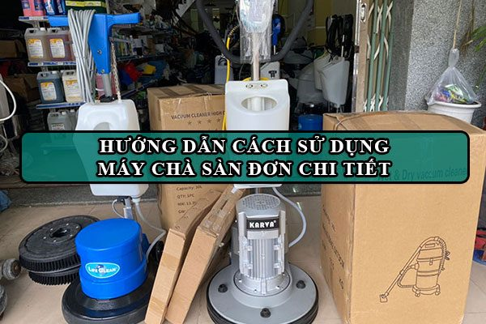
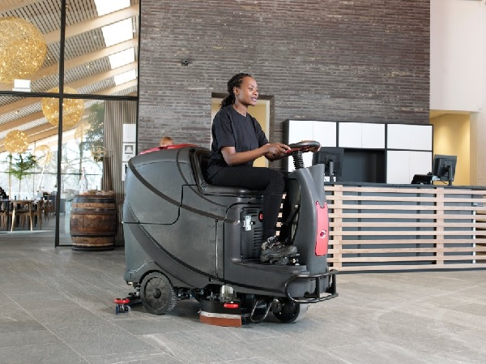
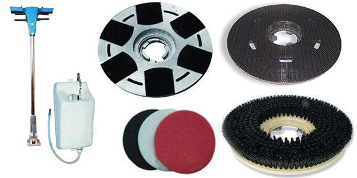
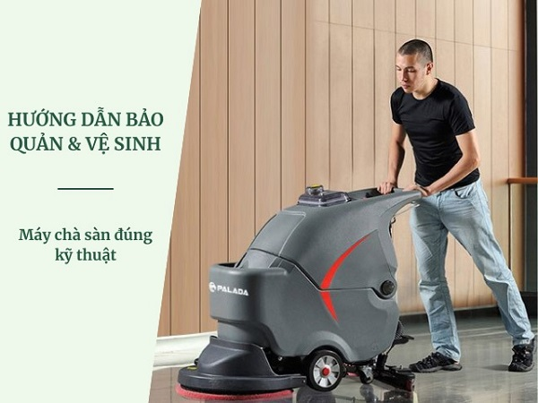

Hướng dẫn cách sử dụng máy chà sàn công nghiệp chi tiết
Hướng dẫn sử dụng máy chà sàn công nghiệp giúp người dùng sử dụng máy đúng cách. Điều này không chỉ giúp máy đạt được hiệu suất hoạt động tốt nhất mà còn đảm bảo thiết bị tránh các hư hỏng cơ bản trong quá trình sử dụng. Tìm hiểu ngay những thông tin dưới đây để nắm được cách sử dụng máy chà sàn nhé.
Một số ưu và nhược điểm khi sử dụng máy chà sàn
Ưu điểm của máy chà sàn
|
Các tiêu chí |
|||
|
Về hiệu quả làm việc |
Làm sạch tốt và có khả năng bảo dưỡng mặt sàn. |
Tích hợp nhiều công dụng như làm sạch, chà sàn, cũng như bảo dưỡng sàn một cách nhanh chóng và hiệu quả. |
Kết hợp các tính năng chà rửa và hút nước dơ cùng lúc. Thiết kế đặc biệt của máy giúp cho công việc vệ sinh nhẹ nhàng. |
|
Về môi trường làm việc thích hợp |
Sử dụng cho những diện tích mặt sàn nhỏ, nhiều chướng ngại vật, hành lang và lối đi nhỏ |
Sử dụng ở những nơi có diện tích mặt sàn lớn, giúp tiết kiệm thời gian và nhân lực lao động |
Thích hợp với mặt sàn có diện tích lớn và thường xuyên bám bẩn. Máy có thiết kế nhỏ gọn nên có thể làm sạch ở cả những diện tích nhỏ hẹp nhiều đồ đạc. |
|
Về mức độ dễ sử dụng và bảo quản |
Máy dễ dàng sử dụng và bảo quản |
Chỉ cần bấm nút điều khiển thì máy tự hoạt động |
Thiết kế theo công nghệ hiện đại, tự động hóa và dễ sử dụng. |
|
Về bảo hành |
Đào tạo miễn phí sử dụng máy |
Thay thế phụ kiện chính hãng. Cung cấp giải pháp vệ sinh và giải đáp các thắc mắc bất cứ khi cần |
Bảo hành theo chính sách hậu mãi của ICD CLEANING MACHINE |
Nhược điểm của máy chà sàn
Máy chà sàn đơn thường phù hợp với các khu vực có diện tích nhỏ và hẹp. Tuy nhiên, nhược điểm của loại máy này là chỉ có chức năng sả nước và làm sạch sàn, cần sự hỗ trợ của máy hút bụi để hút nước bẩn và công việc vệ sinh thường cần ít nhất 2 người thực hiện.
Máy chà sàn liên hợp có bộ phận hút bổ sung làm tăng kích thước, không phù hợp với các khu vực nhỏ. Thích hợp cho việc chà rửa và bảo dưỡng sàn hàng ngày sau khi sàn đã được vệ sinh sạch sẽ.
Phiên bản cao cấp hơn là máy chà sàn ngồi lái, tuy nhiên không thích hợp với các không gian nhỏ. Người sử dụng cần có kỹ năng vận hành xe để sử dụng máy này.
Hướng dẫn sử dụng máy chà sàn công nghiệp
Hướng dẫn sử dụng máy chà sàn công nghiệp đơn
Vì máy chà sàn đơn chỉ có chức năng chuyên biệt là chà rửa và hỗ trợ đánh bóng sàn cũng như giặt thảm mà không có khả năng hút bụi hoặc nước nên khi sử dụng, bạn cần phải sử dụng thêm một máy hút bụi và nước công nghiệp (hoặc còn gọi là máy hút nước cho sàn nhà).
Dưới đây là hướng dẫn sử dụng máy chà sàn công nghiệp đơn giản mà người dùng có thể tham khảo:
- Bước 1: Kiểm tra vị trí cần vệ sinh để lựa chọn phụ kiện làm sạch phù hợp: bàn chải cứng (để chà rửa các vết bẩn cứng đầu), bàn chải mềm (cho việc lau rửa sàn thông thường), pad (gắn lên mâm gai để hỗ trợ đánh bóng sàn),…
- Bước 2: Lấy phụ kiện phù hợp và gắn chúng vào bàn chà hoặc mâm gai, sau đó xoay ngược chiều kim đồng hồ để khóa chặt linh kiện.
- Bước 3: Đổ hóa chất đã pha theo tỷ lệ quy định vào bình chứa. Hãy chỉ sử dụng các loại chất tẩy rửa chuyên dụng và thực hiện pha hóa chất theo hướng dẫn đúng cách.
- Bước 4: Kết nối thiết bị với nguồn điện và điều chỉnh chiều cao cần thiết để phù hợp với người dùng nhất có thể.
- Bước 5: Bật công tắc trên tay cầm điều khiển và tiến hành vệ sinh.

Cách sử dụng máy chà sàn công nghiệp liên hợp
Máy chà sàn liên hợp là một phiên bản tiến hóa của máy đơn, nó kết hợp nhiều chức năng trong một: chà rửa, hỗ trợ đánh bóng sàn và có khả năng hút bụi cũng như nước. Vì vậy, loại máy này được ứng dụng rộng rãi trong nhiều lĩnh vực như bệnh viện, nhà xưởng, trường học và nhiều nơi khác.
Để sử dụng máy lau sàn nhà xưởng liên hợp, người dùng có thể thực hiện các bước sau:
- Bước 1: Pha hóa chất tẩy rửa chuyên dụng với nước sạch theo tỷ lệ quy định và đổ vào bình chứa của máy.
- Bước 2: Kết nối máy với nguồn điện 220V để máy chà sàn có thể hoạt động.
- Bước 3: Bật cùng lúc công tắc chà sàn và công tắc hút nước.
- Bước 4: Khi máy đã hoạt động, di chuyển máy đến các vị trí cần làm sạch.
- Bước 5: Sau khi hoàn tất công việc, tắt công tắc chà trước, sau đó tắt công tắc hút nước và mới sau đó xả nước bẩn từ bên trong thùng chứa ra bên ngoài.
- Bước 6: Cuối cùng, tháo các linh kiện của máy chà sàn để vệ sinh trước khi bảo quản và lưu trữ máy.
Hướng dẫn sử dụng máy chà sàn công nghiệp ngồi lái
Với ưu điểm về thiết kế hấp dẫn, hiệu suất làm việc mạnh mẽ và độ bền ấn tượng, máy chà sàn ngồi lái là một trong những sản phẩm được đánh giá cao cả bởi các nhà phân phối lẫn người tiêu dùng. Loại máy chà sàn ngồi lái này có khả năng thực hiện đồng thời ba chức năng: chà rửa, hút bụi và hút nước. Đặc biệt, với ghế ngồi lái đi kèm, người vệ sinh có thể tiết kiệm thời gian và công sức một cách hiệu quả.
Cách sử dụng máy chà sàn ngồi lái như sau:
- Bước 1: Kiểm tra kỹ tình trạng hoạt động của máy, đảm bảo rằng tất cả các bộ phận đều sẵn sàng cho việc vận hành.
- Bước 2: Người điều khiển chỉ nên ngồi vào ghế lái sau khi đã hiểu rõ về máy và cách vận hành.
- Bước 3: Pha hóa chất tẩy rửa chuyên dụng theo hướng dẫn của nhà sản xuất, sau đó đổ vào thùng chứa nước sạch.
- Bước 4: Kiểm tra lại máy một lần nữa để đảm bảo rằng thiết bị đang hoạt động tốt nhất.
- Bước 5: Tiến hành vệ sinh cho sàn nhà theo đúng quy trình.

Cách để bảo dưỡng máy chà sàn công nghiệp
Có thể chia quá trình bảo dưỡng máy chà sàn công nghiệp thành hai phần chính: bảo dưỡng định kỳ và bảo dưỡng đột xuất.
Bảo dưỡng định kỳ
Bảo dưỡng định kỳ là việc thực hiện các công việc vệ sinh, kiểm tra, thay thế phụ tùng,… theo định kỳ để đảm bảo máy hoạt động tốt.
Các công việc bảo dưỡng định kỳ bao gồm:
♦ Vệ sinh máy: Sử dụng khăn mềm và ẩm để lau sạch bề mặt ngoài của máy. Tháo rời bàn chải, ống hút nước,… để vệ sinh sạch sẽ.
♦ Kiểm tra các bộ phận: Thường xuyên kiểm tra các bộ phận như motor, bánh xe,… để phát hiện sự hỏng hóc hoặc hao mòn.
♦ Thay thế phụ tùng: Khi cần, thay thế các phụ tùng bị hỏng hoặc hao mòn để đảm bảo máy luôn hoạt động tốt.

Bảo dưỡng đột xuất
Bảo dưỡng đột xuất là việc thực hiện các công việc vệ sinh, kiểm tra, thay thế phụ tùng,… khi máy gặp sự cố hoặc sự cố đột ngột xuất hiện.
Các công việc bảo dưỡng đột xuất bao gồm:
♦ Xử lý sự cố: Khi máy gặp sự cố, cần xác định nguyên nhân và xử lý ngay lập tức để tránh hư hỏng nặng hơn.
♦ Vệ sinh máy sau khi sử dụng: Ngay sau khi sử dụng máy, cần vệ sinh máy sạch sẽ để tránh bụi bẩn và rác thải bám vào và gây hư hỏng.
Những lưu ý khi sử dụng máy chà sàn công nghiệp
Để đảm bảo sử dụng máy chà sàn công nghiệp an toàn và hiệu quả, hãy lưu ý các vấn đề sau:
Lựa chọn máy phù hợp
Trước khi sử dụng máy chà sàn công nghiệp, hãy lựa chọn máy phù hợp với nhu cầu của bạn. Xác định diện tích khu vực cần vệ sinh, loại sàn cần làm sạch, tần suất sử dụng,… để chọn máy có công suất, kích thước và tính năng phù hợp.
Sử dụng máy đúng cách
Khi sử dụng máy chà sàn công nghiệp, hãy tuân thủ các hướng dẫn sau đây để đảm bảo an toàn và hiệu quả:
♦ Đọc kỹ hướng dẫn sử dụng trước khi khởi động máy.
♦ Chuẩn bị đầy đủ các phụ kiện cần thiết cho máy.
♦ Kiểm tra máy trước khi sử dụng để đảm bảo nó hoạt động tốt.
♦ Sử dụng hóa chất vệ sinh phù hợp cho từng loại máy.
♦ Lau chùi và bảo dưỡng máy sau khi sử dụng.

Bảo quản máy đúng cách
Sau khi sử dụng máy chà sàn công nghiệp, hãy bảo quản máy theo cách sau để đảm bảo hiệu suất và tuổi thọ của máy:
♦ Bảo quản máy ở nơi khô ráo và thoáng mát.
♦ Vệ sinh máy kỹ lưỡng sau mỗi sử dụng.
♦ Thực hiện bảo dưỡng máy định kỳ để duy trì hiệu suất tốt.
Lời kết
Nắm rõ hướng dẫn sử dụng máy chà sàn công nghiệp giúp bạn dễ dàng vận hành, đảm bảo sàn luôn được sạch sẽ và an toàn. Máy chà sàn là một công cụ quan trọng cho việc duy trì vệ sinh trong các nhà xưởng, nhà hàng và khách sạn. Hãy tuân thủ các hướng dẫn và kỹ thuật được nêu trên để đạt được hiệu suất vệ sinh tốt nhất.
***Tìm hiểu thêm: Cho thuê máy chà sàn uy tín
 Cho thuê máy chà sàn công nghiệp tại Hà Nội – 02422009188
Cho thuê máy chà sàn công nghiệp tại Hà Nội – 02422009188 Tư vấn cách chọn lựa máy chà sàn nhà gia đình
Tư vấn cách chọn lựa máy chà sàn nhà gia đình Có nên mua máy hút bụi công nghiệp cho gia đình?
Có nên mua máy hút bụi công nghiệp cho gia đình?